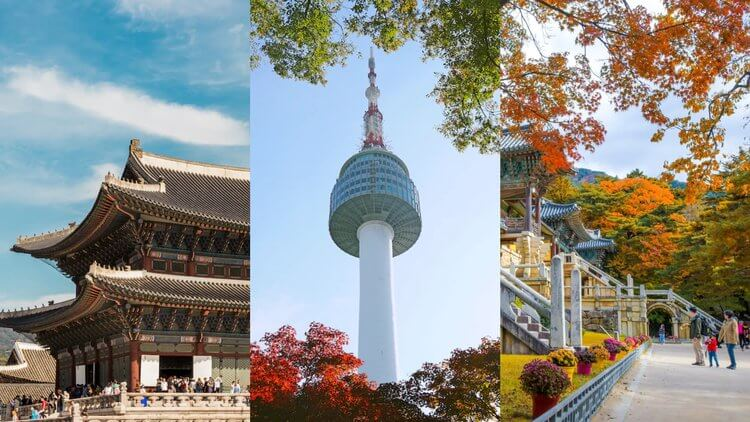
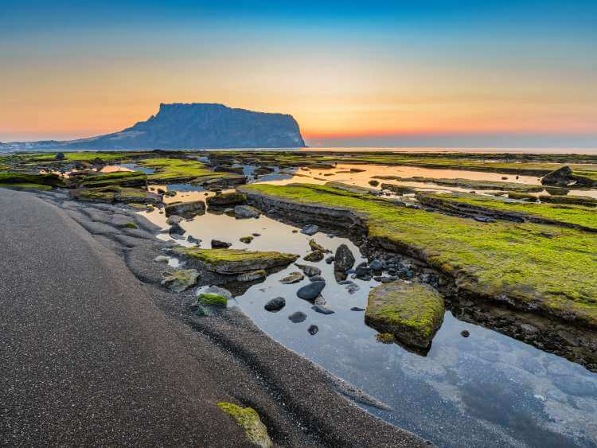
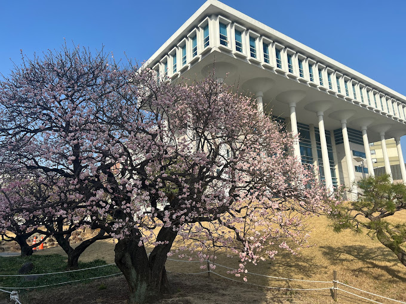
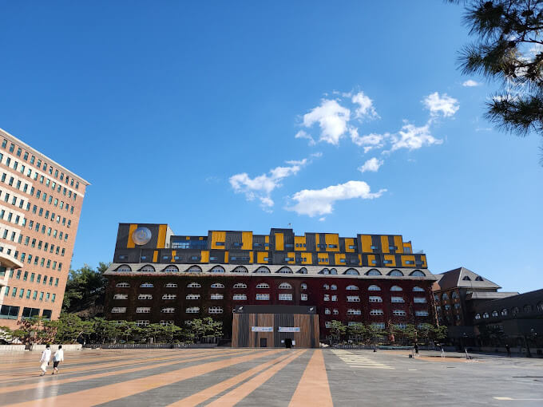
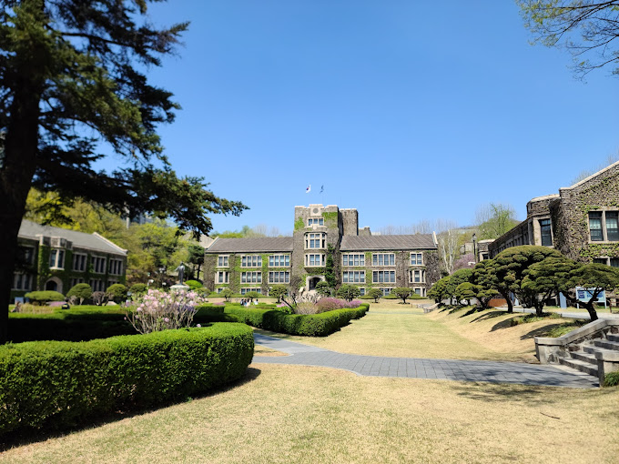
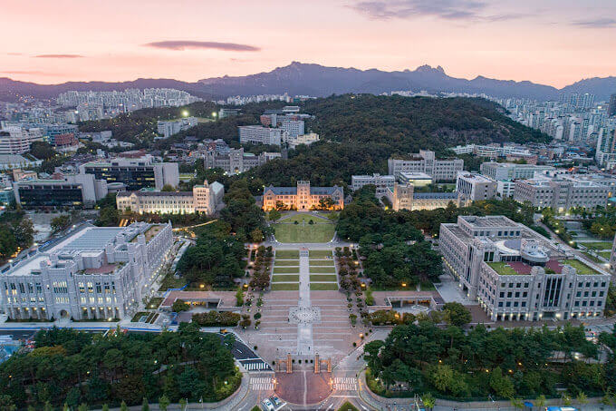
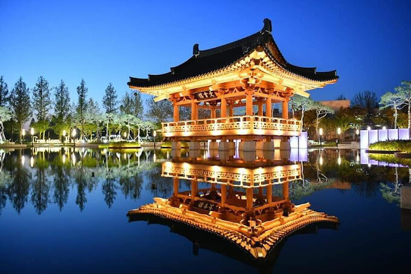
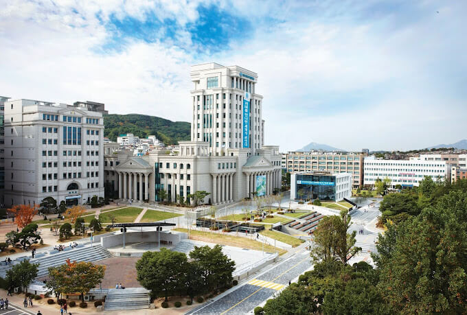

All about Traveling and Studyig in South Korea
Learn More
General information about South Korea
Republic of Korea is a peninsular in Eastern Asia, washed by three aeas (Yellow, Japanese, and East Chinese), and borders North Korea (North Korea) on the north.
The capital is Seoul.
State language - Korea.
Population - 51,780,579 people (27th place in the world).
Korean statehood dates back to the 4th-3rd centuries BC. As a result of World War II, Korea, previously under the control of the Japanese Empire, was divided into a northern part, which came under the jurisdiction of the USSR, and a southern part, controlled by the United States.
The Republic of Korea was founded on August 15, 1948 within the American zone, after which the Democratic People's Republic of Korea was proclaimed on September 9 within the Soviet zone. The subsequent Korean War (1950-1953) cemented the division of the country.
Today, South Korea is an economically developed country with a high level of per capita income. Due to its high economic performance, the Republic of Korea, along with Singapore, Hong Kong and Taiwan, is called the “Asian Tiger”.
South Korea is a country that has given the world quality affordable cars and technology, magnificent cosmetincs and unusual Pop culture, without a doubt it is the most interesting tourist destination. Ancient monasteries, picturesque mountains, unique cuisine and adeveloped service sector attract more and more foreign tourissts every year.
When is the best time to go to South Korea?
The climate of South Korea is predominantly temperate monsoon. The seasons are expressed quite clearly.
Winter is relatively snowy and cold - down to -15°C. January is characterized by dust storms. For February - a strong piercing wind.
Summers are hot, humid and long. The monsoon season lasts from late June to late July. August is the hottest month in Korea, with temperatures reaching +40°C.
Autumn is a comfortable time for tourism again. In September and October the weather is warm and clear, pleasant in all respects, daytime temperatures range from +20 to +30°C. In November, a sharp cold snap begins; it is better to plan your trip at the beginning of the month, when the air still warms up to +15°C.
Jeju Island is located south of the Korean Peninsula, the climate is subtropical monsoon.
The swimming season falls strictly in the summer. At the same time, there is almost no sweltering heat here, the average air temperature is +26°C, and the water temperature is +25°C.
Autumn and spring are warm, ideal for excursion and medical tours.
Winter on the island is mild but windy. The coldest month is January, the temperature stays around +6°C.
Sights of South Korea
Korea boasts not only a mild climate, but also its natural and cultural attractions.
Seoul
The capital of South Korea is famous for its entertainment industry and shopping, restaurants and street food, galleries and nightlifeThe capital of South Korea is famous for its entertainment industry and shopping, restaurants and street food, galleries and nightlife.
Don't miss: Lotte World Theme Park, Cheonggyecheon Creek Recreation Area, COEX Shopping and Entertainment Complex, Myeongdong District, Namsan Tower Observation Deck, Namsangol Hanok Village Open Air Museum, National Museum of Korea.
For lovers of historical attractions: Gyeongbokgung Royal Palace, Changdeokgung Palace Complex (UNESCO), Bongeunsa Temple, Myeongdong Cathedral, etc.


Gyeongju
One of the most beloved cities by tourists in South Korea, the archaeological treasure trove of the country. Several sites in Gyeongju are included in the UNESCO World Heritage List. Here was the capital of the ancient powerful state of Silla (IV-X centuries).
The main attractions of the city: Seokguram Cave Temple, Pulgusa Temple, Chonmachon Tomb, Anapchi Pond, Cheomseongdae Observatory, Wolseong and Myonghwal Fortresses.
Busan
The main port of the country and a very colorful city. Busan is home to majestic mountain ranges, miles of sandy beaches, natural hot springs and serene Buddhist temples.
The main attractions include: Haeundae Beach and its surroundings, Haedong Yongungsa Temple, Pomosa Temple, Taejeongdae Nature Park, Jagalchi Fish Market, Busan Tower in Yongdusan Park, Songdo Ropeway, Gamcheon area, Bay 101 area, etc.
Jeju
Jeju is the main treasure of South Korea, an island with a unique natural landscape created by volcanic activity. Jeju is a UNESCO World Heritage Site.
In the center of the island there is one of the natural attractions - the volcano and the Hallasan National Park - a paradise for photographers. There are several walking routes lasting from 30 minutes to 5 hours.
Hyopjae Beach in Hallim Village is an azure and cobalt sea with a 9-kilometer coastline of soft white sand mixed with black lava.
“Tolharubans” - stone sculptures in the form of grandfathers made of solidified lava - a symbol of the island.
And also you will find: picturesque waterfalls, tangerine groves, luxurious gardens, the Love Land sculpture park, diving and other active recreation.

South Korean cuisine
There is a cult of food in South Korea. Here they may not ask how you are doing, but they will ask if you ate well this morning or what you had for dinner yesterday. Going to a restaurant is the same type of leisure activity as going to a movie or a museum. In Korea they eat only in company, and therefore the portions are usually huge. During lunch or dinner, it is customary to share your dish and try someone else's, and it doesn't matter whether it's Korean kimchi chige or Italian carbonara.
Korean cuisine in the form in which it exists now was finally formed during the war with Japan at the end of the 16th century. The Japanese brought new fruits and vegetables, the main one being red pepper. It is thanks to him that most Korean dishes can be described as “spicy and hot.” But still, the main feature of this cuisine is balance. An abundance of fresh vegetables, soybeans and herbs, seafood, the right combinations of ingredients, limited consumption of meat - all this makes Korean food also healthy.
Must-try dishes in South Korea:
Kimchi is a snack made from pickled Chinese cabbage with hot red pepper;
Bibimbap is a dish of rice, meat or seafood, vegetables, spicy gochujang paste and eggs;
Kimbap - Korean rolls;
Samgyeopsal - bacon fried immediately before consumption on a special tabletop grill;
Kalbi - barbecued beef ribs;
Bulgogi - marinated meat fried over an open fire;
Teokbokki - spicy rice cakes with various additives;
Japchae - salad of noodles, vegetables, mushrooms and/or meat;
Mantu - Korean dumplings;
Samgyetang - chicken soup with rice and ginseng.
Transport of South Korea
Korea is a country with one of the most developed transport infrastructures not only in Asia, but also in the world. Transport works like a well-oiled machine, everything is clean, comfortable and completely safe to use. The service staff is extremely polite, ready to help with any question, and in addition, at airports, at large railway stations and in the metro, they are gradually becoming English-speaking.
There are 6 international airports in Korea: Incheon, Gimhae, Jeonju, Daegu, Yangyang and Jeju. Incheon Airport, located near Seoul, serves flights to all parts of the world and is one of the best international hubs. Other airports serve Asian destinations. Domestic flights are operated by several airlines, including low cost ones.
Passenger trains operated by the Korean National Railway are a very fast and reliable mode of transport.
There are three types of trains: Sae Maeul Super Express, Mugunghwa Express Train, and Thongil Passenger Train.
On weekends and holidays, trains are usually completely packed with passengers, so it is better to book and purchase tickets in advance.
Sea cruises are one of the most interesting ways to travel around Korea. Ferries connect Busan and Jeju, Mokpo and Hongdo, Pohang and Ulleungdo and other cities along the waterways.
Busan is the largest port and second largest city in the country. This international seaport is the main sea gate of Korea. Another international port is Incheon, which mostly serves shipping lines leading to China.
The bus network is also well developed. There are three long-distance express bus terminals in Seoul, from where routes connecting the capital with other major cities in the country begin.
City buses are the most common type of public transport. They run frequently and are relatively inexpensive.
South Korean Universities

Chonnam National University
Address: 77 Yongbong-ro, Buk-gu, Gwangju, Republic of Korea.
Founded: 1952.
President: Sungtak Jung
See More

Seo Kyeong University
Address: 124 Seogyeong-ro, Seongbuk-gu, Seoul, Republic of Korea
Founded: October 22, 1947
Type of educational institution: Private university.
See More

Yonsei University, Sinchon Campus
Address: 50 Yonsei-ro, Seodaemun-gu, Seoul, Republic of Korea
Founded: April 10, 1885
President: Jung Gabyeon
See More

Korea University
Address: 145 Anam-ro, Seongbuk-gu, Seoul, Republic of Korea
Founded: May 5, 1905
President: Kim Byung Chul (18th)
See More

Jeonbuk National University, Jeonju
Address: 567 Baekje-daero, Deokjin-gu, Jeonju-si, Jeollabuk-do, Republic of Korea
Provinces: Jeollabuk-do
Founded: October 15, 1947
See More

Hanguk University of Foreign Studies
Address: 107 Imun-ro, Dongdaemun-gu, Seoul, Republic of Korea
Founded: April 20, 1954
President: Chung-woon Park
See More
About us
My Page is about South Korea and studying there. We will help you to get to know Korea, get information, for example, where it is worth so rest, what places to visit, which season is worth going there.
If you want to stydy in South Korea , we will find you university for you, we will show you what documents you need for it. We can help you find language courses before tou go to Kore. We wiil try our best to help you and provide you with all the information what interests you.
On the page you will find a lot of interesting information, in case of other questions you can register or write to us on social networks.